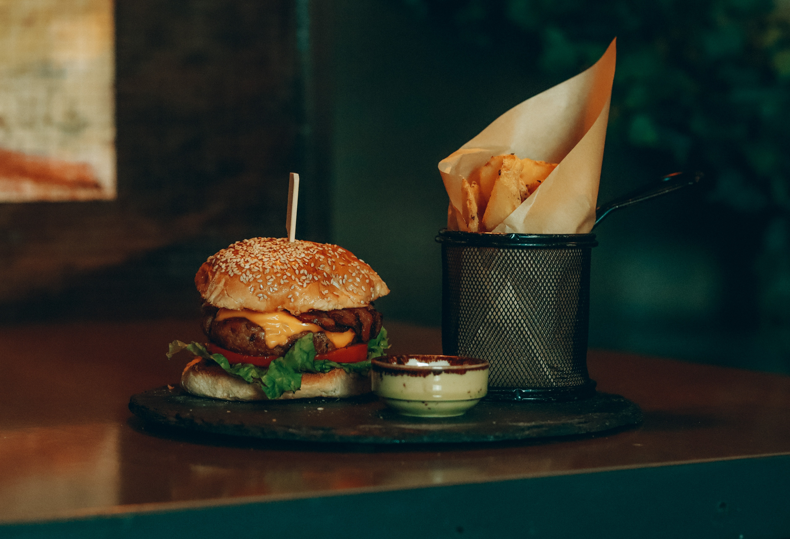
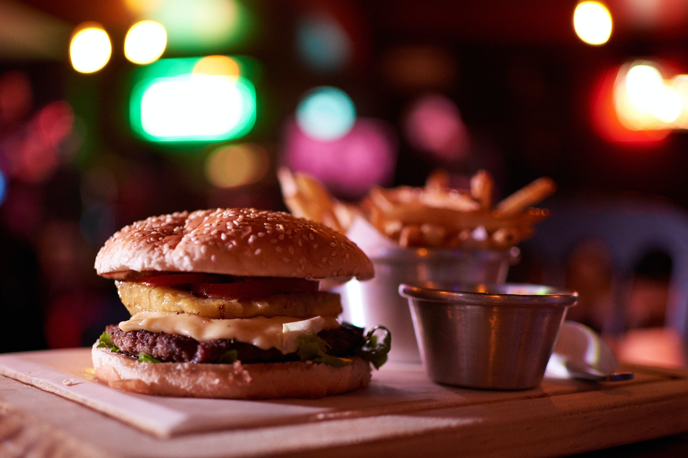
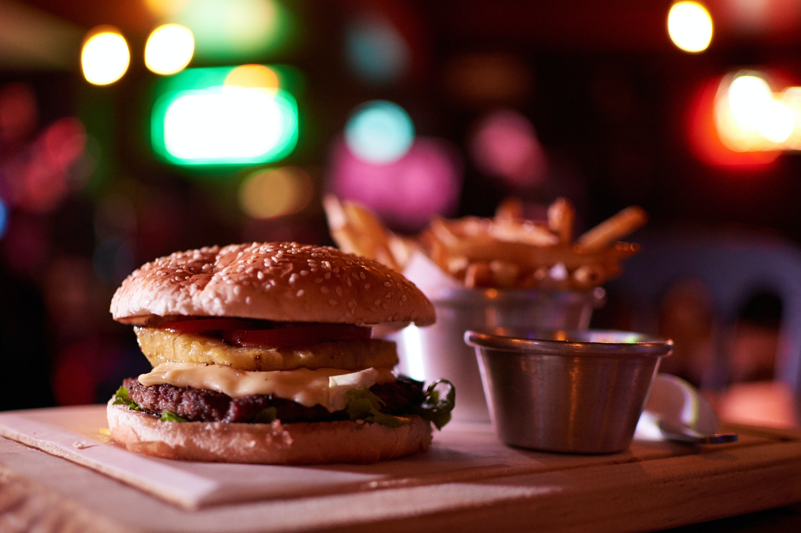
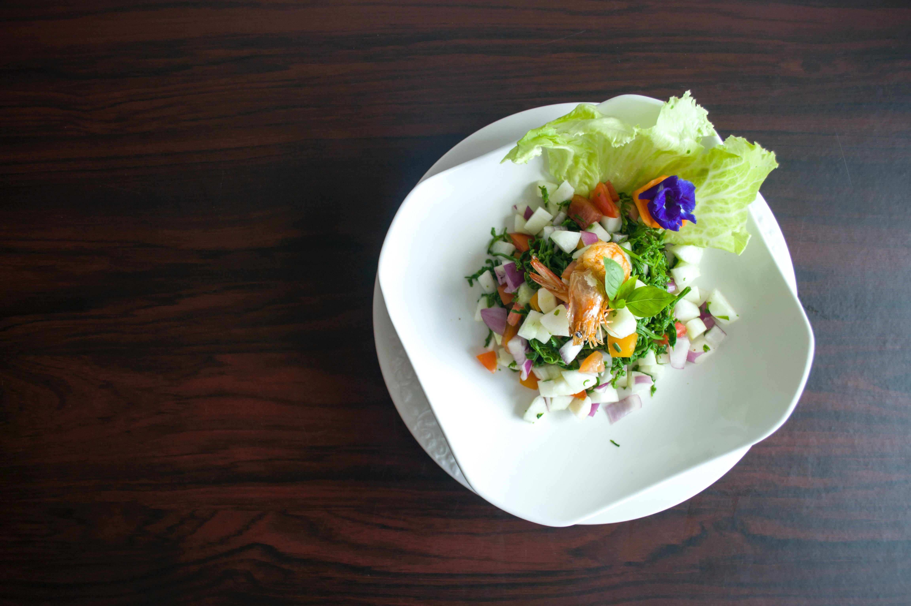
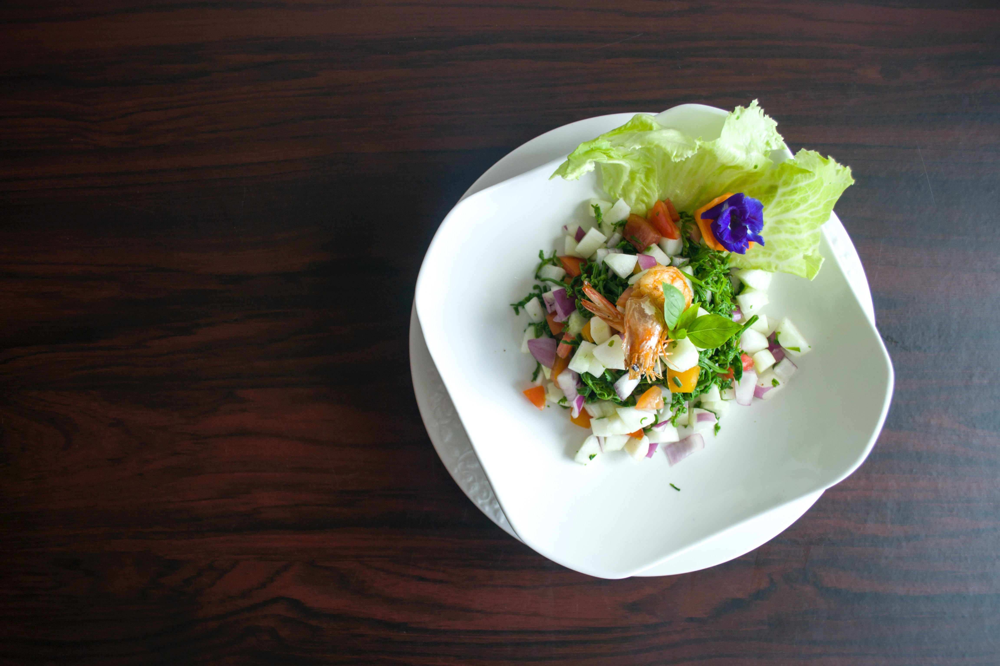
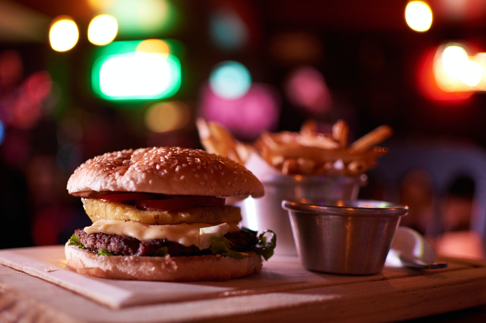
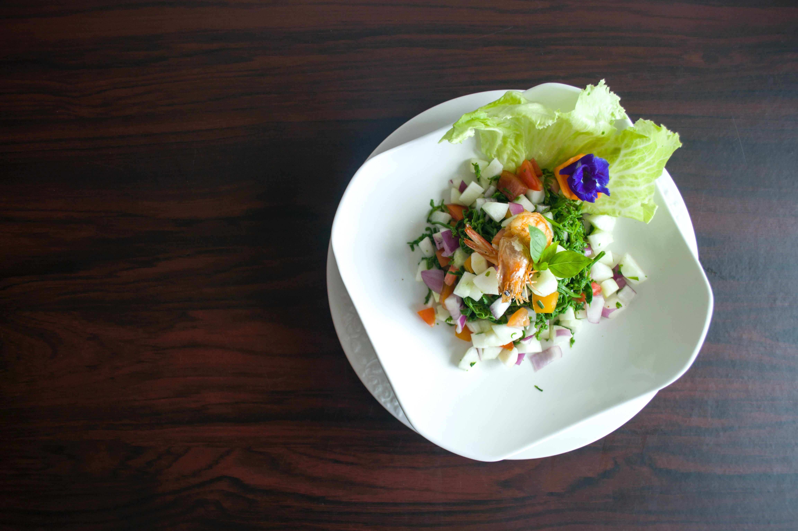

Gallery


 


 





FAQ
___Frequently Asked Questions
In 2010, the Rudd Center conducted a comprehensive study of the nutrition and marketing of fast food to children. This report presented the nutrient quality of fast food, evaluated the products marketed to children as compared to those marketed to adults, quantified young people's exposure to fast food marketing. This update looks at changes in the last three years in order to document how the fast food nutrition and food marketing landscape have changed.
Due to their earlier state in cognitive development, children are more vulnerable to the influence of marketing. Children have a more difficult time than adults distinguishing between entertainment and marketing content on television. In addition, lifelong taste preferences and brand loyalties are being established in childhood. Hence, foods marketed to children should be held to a higher standard.
Fast food plays a large role in the diets of young people. Fast food is the most unhealthy food product marketed to children, other than sugar-sweetened beverages, and is relentlessly and aggressively targeted toward them. Few fast food items meet healthy nutrition standards and there is concern about the impact of fast food consumption on young people's overall nutrition and health. Fast food companies spent more than $4.2 billion on marketing in 2010, which was more than any other food category, with the exception of carbonated beverages. The restaurants market their products to children extensively using the internet, social media, television, and in-store promotions.
Central to this research is the evaluation of the nutrient content of thousands of menu items offered at 12 fast food restaurants in the United States. We reviewed the scientific literature on how to score foods for their nutrition and believe that the most scientifically-validated system is the nutrient profiling system used in the United Kingdom. This nutrition profiling system was developed by Rayner and colleagues at Oxford University and is used by government in the United Kingdom to determine which foods can be marketed to children on television.
This analysis included the 12 restaurants highlighted in the 2010 Fast Food FACTS report, as well as six additional restaurants that met at least one of two criteria: 1) ranked among the top-15 in 2012 U.S. sales, or 2) had child-targeted messages on their websites and national TV advertising. We also conducted a more limited analysis of the 25 restaurants with the most advertising spending on national TV in 2012.We analyzed the menus of 12 of the 18 restaurants examined in this report. The six pizza and coffee restaurants were excluded due to the predominance of one or two food item categories on those menus (e.g. pizza at pizza restaurants and snack items and coffee beverages at coffee restaurants).
We analyzed youth exposure and conducted content analyses of television advertisements, as well as restaurant websites, display advertisements, social media websites, and mobile applications.
Young people's exposure to advertising for individual restaurants and products was documented using licensed syndicated media research data, including television ratings data from the Nielsen Company, and data from comScore to document website and internet advertising exposure.
Young people's exposure to advertising for individual restaurants and products was documented using licensed syndicated media research data, including television ratings data from the Nielsen Company, and data from comScore to document website and internet advertising exposure.
Both. This research assesses the nutritional quality of fast food restaurant menus and documents the exposure and content of fast food advertising to children.
Although restaurants have added and marketing healthier items such as salads and grilled chicken, we found that the proportion of healthy menu items has not increased, due to large increases of unhealthy items as well. The nutritional quality of fast food menus can only improve when restaurants commit to a proportional increase in the availability of healthy items on their menus and price them competitively.
Support for this project was provided by grants from the Robert Wood Johnson Foundation.